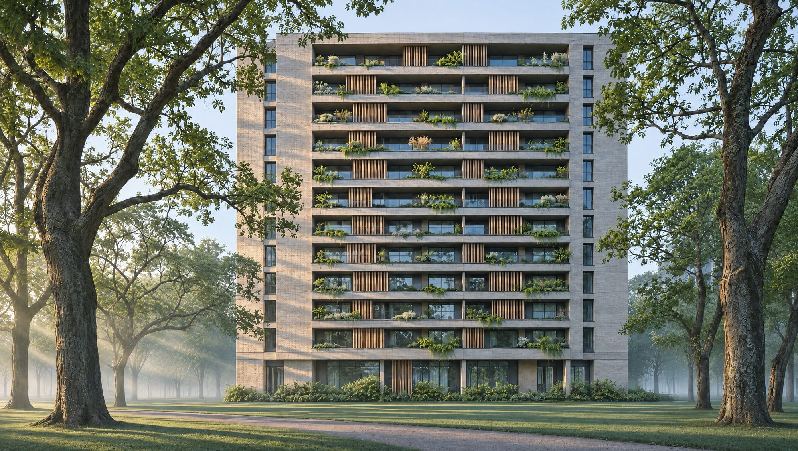
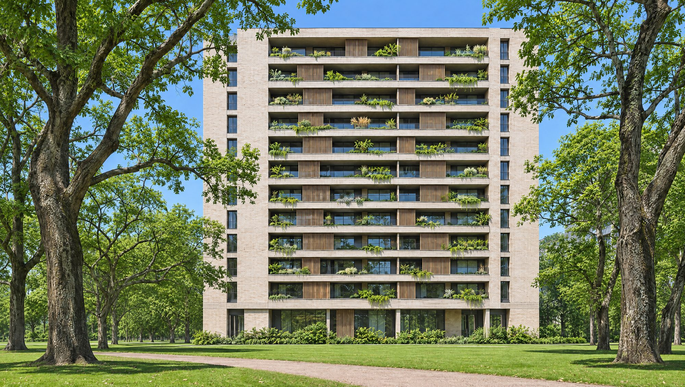
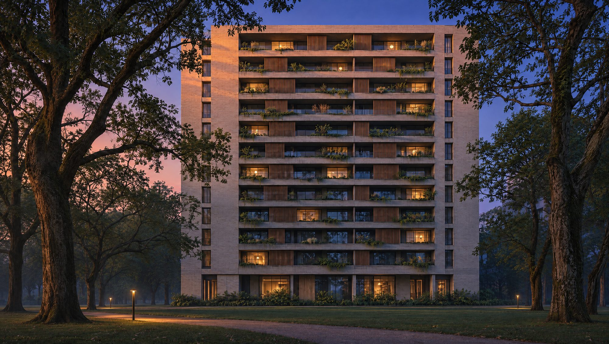
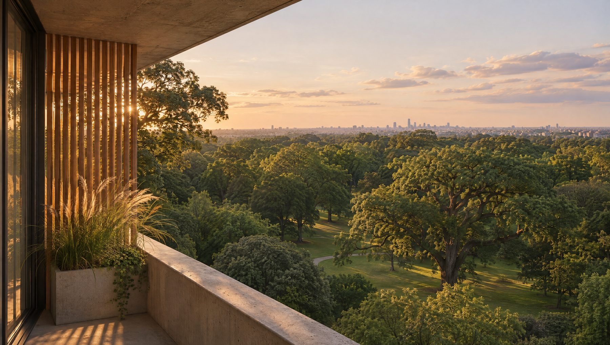
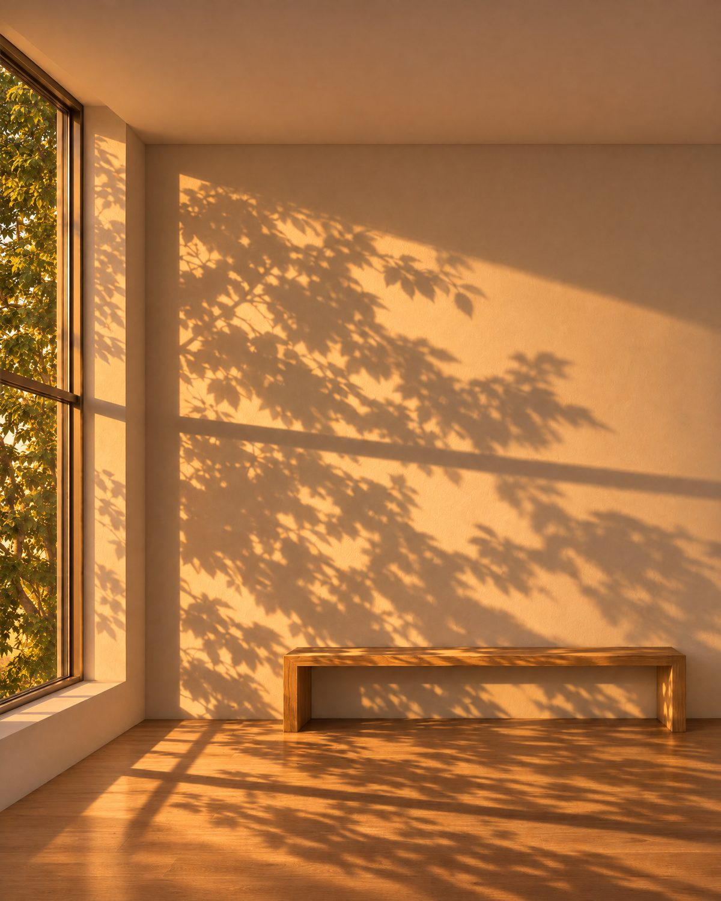
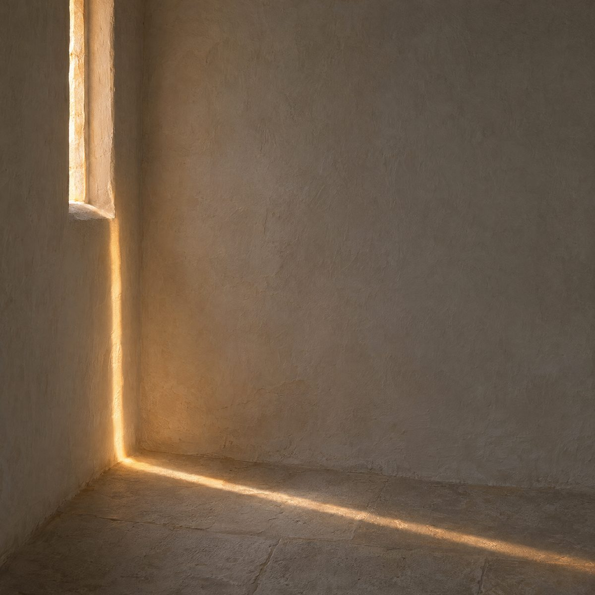
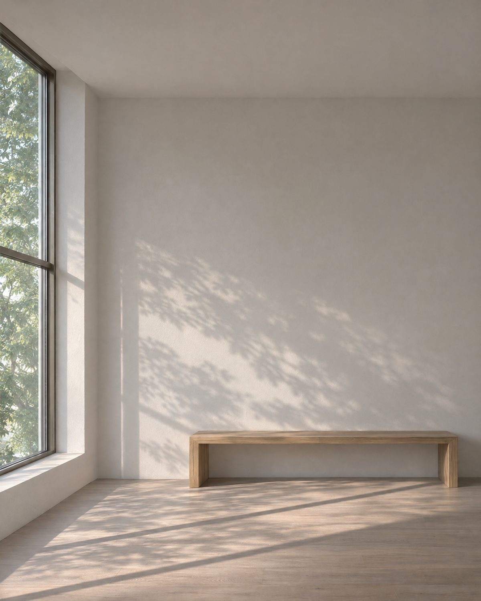
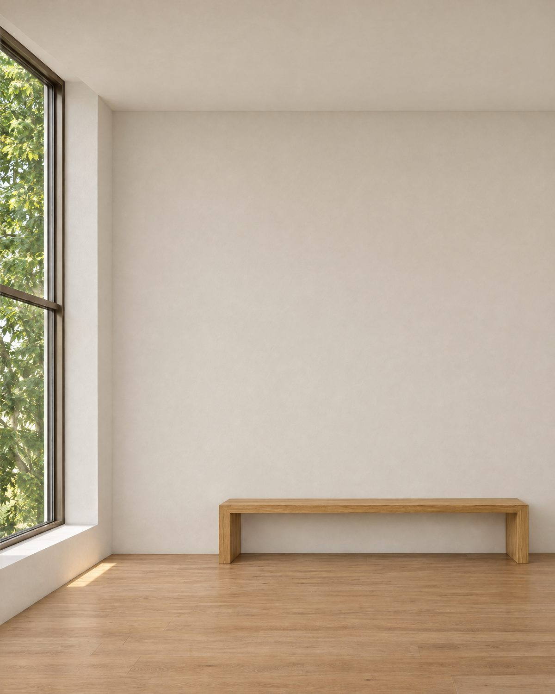
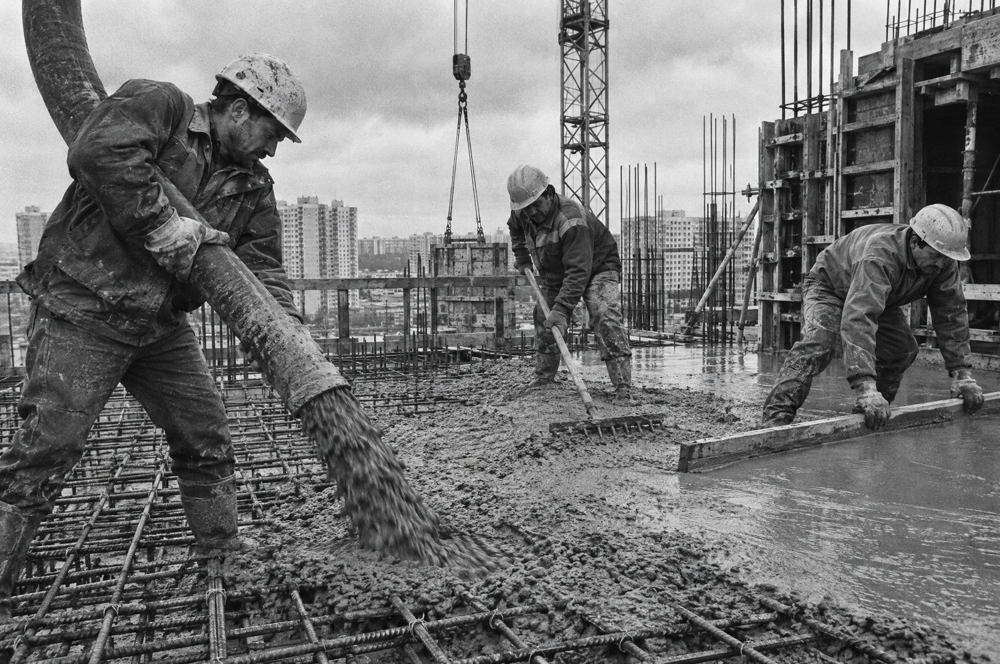
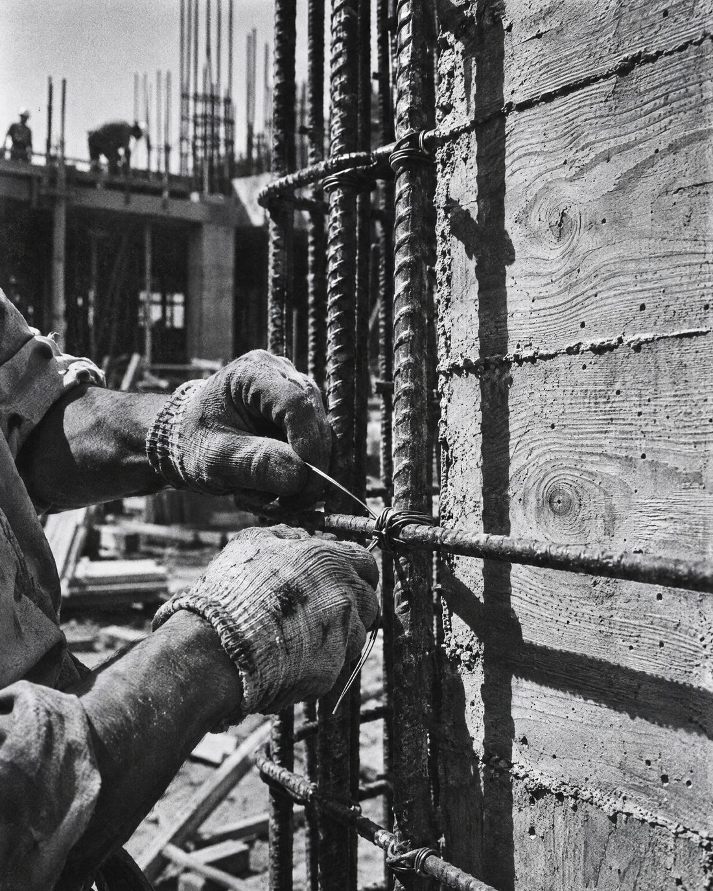

El proyecto
Oller es una torre de catorce pisos sobre el borde del parque, con 48 unidades de uno a cuatro ambientes. Hormigón visto, ladrillo claro y balcones profundos con celosías de madera. Cada planta está orientada para que los ambientes principales reciban sol directo.
- Pisos
- 14
- Unidades
- 48
- Ambientes
- 1 a 4
- Entrega
- Dic. 2027



Orientación
Un dos ambientes norte, a lo largo del día.
Antes de elegir, conviene saber qué luz recibe cada unidad. Estas fotos muestran la misma planta a la mañana, al mediodía y a la tarde.


Unidades disponibles
| Unidad | Ambientes | Superficie | Orientación | Sol directo |
|---|
Avance de obra
Estructura: 9 de 14 pisos · Actualizado el 3 de noviembre


Agendar una visita
Elige la unidad y el día. Te respondemos por WhatsApp.